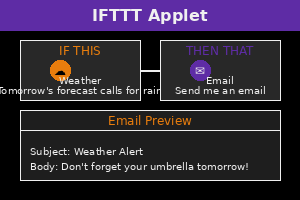
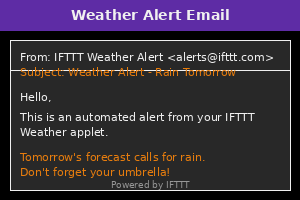

0% Complete
Day 3: AI Automation with IFTTT
Introduction to AI Automation
Welcome to Day 3 of "AI Made Simple"! Today, you'll learn how to automate tasks using IFTTT (If This, Then That), a free platform that connects different apps and services to create automated workflows.

IFTTT allows you to:
- Connect your favorite apps and services together
- Create "applets" that automate repetitive tasks
- Save time by letting technology work for you
- Enhance your digital life without any coding skills
Beginner Activity: Create Your First Automation
Let's create a simple automation that saves you time:
- Visit IFTTT.com and create a free account
- Click "Create" to start a new applet
- For the "If This" part, choose a trigger service (e.g., Weather)
- Select a specific trigger (e.g., "Tomorrow's forecast calls for rain")
- For the "Then That" part, choose an action service (e.g., Email)
- Select an action (e.g., "Send me an email")
- Customize the message (e.g., "Don't forget your umbrella tomorrow!")
- Name your applet and click "Finish"

Tips for useful automations:
- Think about repetitive tasks you do daily or weekly
- Consider information you often need to remember
- Look for connections between the apps and services you already use
Bonus Task: Create an AI-Powered News Digest
Let's create an automation that uses AI to keep you informed:
- In IFTTT, create a new applet
- For the trigger, select "Date & Time" and choose "Every day at"
- Set a time when you'd like to receive news (e.g., 8:00 AM)
- For the action, select "Email" or "Notifications"
- In the message field, include the phrase "Today's top news"
Now, each morning, you'll receive a prompt to check the news. You can then ask an AI assistant (like those from Lesson 1) to summarize the day's top stories!
Reflection Question
Consider this question about automation in your life:
"What are three tasks in your daily routine that take up time but don't require much thought? How might automating these tasks change your day?"
This reflection helps you identify opportunities to use AI and automation to reclaim your time.